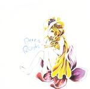

| Artist: | Peterroom |
| Title: | Sumire |
| Label: | Vital Records VR-018 |
| Length(s): | 27 minutes |
| Year(s) of release: | 2004 |
| Month of review: | [06/2006] |
| 1) | A Person Who I Hate | 4.13 |
| 2) | Alabama Song | 3.52 |
| 3) | Andreas Brothers | 8.42 |
| 4) | It's Not Worth If Afraid | 6.57 |
| 5) | Let Me Know A Song | 5.09 |
Until I was told that it is quite usual to sing Kurt Weill's Alabama Song in off-key manner, this version quite irritated me. And you know what, I still did so when I knew that it was supposed to be sung like this. Very theatre art style, which also comes out in the performance, sometimes quite intense, by Kobayashi.
Andreas Brothers is the longest track here, opening with high pitched sounds that give me a headache. Only after three minutes does some actual music come into the picture (hearing range). But even then we are noodling on at the keyboards, although there is percussion too.
It's Not Worth If Afraid seems to be missing a word in the title, but it is all I have for you. The sound is lo-fi, the strappings mainly a brand of jazzrock with the drummer adding quite a bit to the almost inaudible piano and the other melodic instruments. Very unbalanced. The vocals lie on top of the music very much. I guess, Peterroom is mainly a vehicle for the performance of Kobayashi.
Let Me Know A Song is similar to the opener, and as such an okay track. Piano and vocals are the focal point.